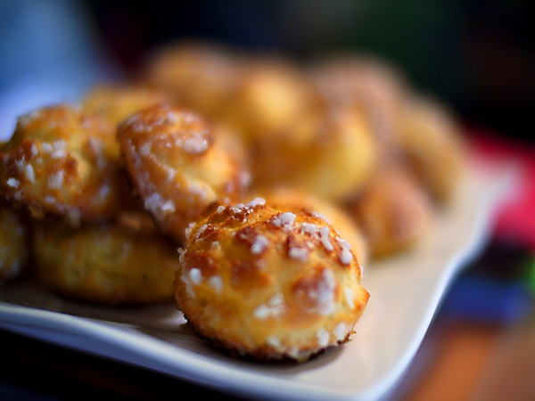

Chouquette Bytes
These byte sized round hollow pastries topped in pearl sugar are made with a traditional French 4-ingredient pâte à choux dough. For this dough we source all our butter, water, flour, and eggs locally to ensure the highest quality. These delectable hollow pastries make for a great light snack or dessert. We suggest pairing it with a Grasshopper Mocha or a Cophee and Paste. Available in groups of 10, 8, or F.